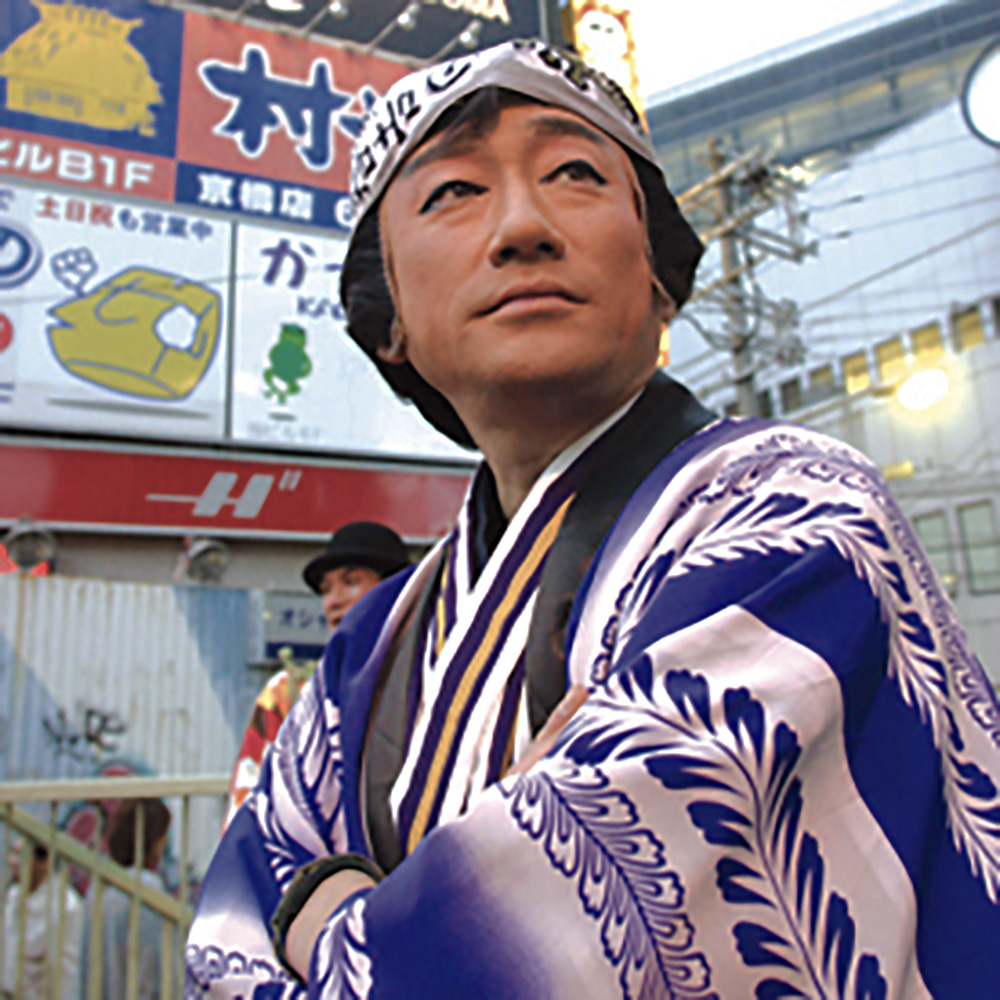

チンドンの歴史
HISTORY
1845
弘化2年
- ちんどん屋の元祖「飴勝」登場
- 千日前の大阪法善寺の飴売りや飴勝は、竹製の鳴り物と売り声で人気者になった。 この売り声を売ることが出来ないかと考えた飴勝は、寄席の客寄せを請け負う。 短い法被に大きな笠脚袢にわらじ、拍子木をさげて町にで、「今日は松屋町の何々亭…」とやった。 これがちんどん屋の元祖といわれている。

広目家の広告
鈴木春風（1851 - 1913）の写本
『世渡風俗図会』
1883
明治16年
- 大阪の勇亀が、
はじめて「東西、トーザイ」 - 飴勝の仕事を引き継いだ勇亀は、芝居の口上をまねて「東西、トーザイ」と大声で叫びつつ、町中を触れ回った。このため勇亀は『東西屋』と呼ばれる。以後路上広告業は、「東西屋」に。

アラスカ・ユーコン太平洋博覧に 参加した日本の東西屋
1885
明治18年
- 東京で「広目屋」秋田柳吉
- 大阪出身の東西屋、秋田柳吉が初めて東京で、東西屋式の宣伝を行った。秋田は広目屋と名乗り、東西屋の拍子、口上に、さらに軍楽隊をプラスし、楽隊広告を誕生させた。彼のまねをする業者が増え、宣伝行列のことを広目屋というようになった。
1931
昭和6年
- 東西屋と広目屋が、
ちんどん屋と呼ばれはじめる - 大正時代に考案された「ちんどん太鼓」。ひとりでいろんな楽器を演奏できるよう鉦と太鼓を一緒にしたものだが、ここから東西屋、広目屋は「ちんどん屋」と呼ばれだした。 室生犀星の短編『チンドン世界』は、昭和初期、東京の場末に住む広目屋夫婦の話。 『軍楽隊なんて奴はプウカプカドンドンで、すっと街を素通りにしてしまって、なにも効果 はありませんや。 それよりか街の女や子供まで面白がられる広目屋さんに限りますよ。第一、印象的で街の人達とも顔馴染みがありますからね』というくだりがある。

商店開店祝いでのチンドン屋。 1935年頃。現山梨県都留市。
1941
昭和16年
- 第二次世界大戦
ちんどん屋禁止令 - 他の大道芸も一切禁止。ちんどん屋が浮かれて町を歩く時代ではなくなった。
1950
昭和25年
- 戦後全盛期
チンドン人口2500人 - 経済的には成長したが広告メディアがそれに追いつけなかった過渡期に、ちんどん屋は再び街頭に現れた。ちんどん屋の黄金時代。ブラスバンドのスネア・ドラムを持つ十人編成も登場。。

戦後全盛期のチンドン屋
1960
昭和35年
- ちんどん屋といえば古くさい
-
昭和30年代後半からテレビが普及。大衆の音楽の好みの変化もあり、ちんどん屋は
古くさいといわれるようになった。
1977
昭和52年
- ちんどん通信社 誕生前の出来事
-
現代表・林幸治郎が京都・立命館大学在学中に『ニューオリンズジャズ研究会』を結成。
同会の練習中、町をゆくちんどんやの演奏に心を引かれ、『ちんどん研究会』と改名し、会員とともに日夜ちんどんの研究に勤しむ
。これが後の「ちんどん通信社」の母体となる。
林幸治郎が大阪の老舗ちんどん屋「青空宣伝社」に飛び込みプロとしてのスタート！ 当初は商売の勉強のつもりでの入社が、現場をこなすうちに、ビジネスとして「ちんどん屋」の可能性を見い出してゆく。 当時、大学出の「学士ちんどん屋」としてマスコミの寵児に…

ちんどん通信社 代表
林幸治郎
1984 - 現在
昭和59年~
- ちんどん通信社旗上げ
-
大阪市西成区天下茶屋の小さなアパートでの開業
旗揚げ初仕事は、野崎のパチンコ店/東京・有楽町マリオンオープンイベント参加